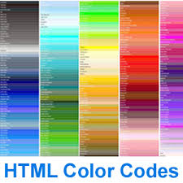

This is bold,this is italicizedandthis is underlined.

This is one of my favorite colors. (Medium Slate Blue in Trebuchet size 7)
This is another of my favorite colors, Calibri, size 6.
This is Verdana, in maroon, size 2.